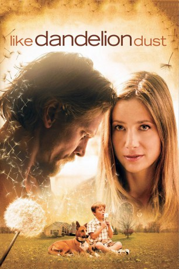

#3642 Wie ein Staubkorn im Wind
Alternativ: Like Dandelion Dust
 
 IMDB-Wertung: 7.1 / 10
IMDB-Wertung: 7.1 / 10  Metascore: 0
Metascore: 0 
Nach sieben Jahren Knast wird Rip endlich entlassen und schwört sich ein besserer Mensch zu werden. Jahrelang hatte er seine Frau Wendy mißhandelt, und sogar ihr gemeinsames Kind Joey musste zur Adoption freigegeben werden, weil die Familie zerrüttet und mittellos war. Rip setzt es sich in den Kopf Joey zurück zu bekommen, der mittlerweile seit Jahren bei seinen Adoptiveltern Jack und Molly Campbell ein sorgenfreies und glückliches Leben führt. Ihre Leben überschneiden sich, verflechten sich und kollidieren, und es dreht sich alles um die Liebe zu einem kleinen Jungen...
Jahr: 2009
Dauer: 104 Minuten
FSK:
Land: USA Studio: Blue Collar ReleasingTonspuren: DTS - ,
Untertitel:
Auflösung: 1080p (1920x1080) Größe: 7874 MB
Genre: Drama
Regisseur: Jon Gunn
Drehbuch: Björn Carlström
Soundtrack:
Darsteller:
- Mira Sorvino als Wendy Porter
 Barry Pepper als Rip Porter
Barry Pepper als Rip Porter Cole Hauser als Jack Campbell
Cole Hauser als Jack Campbell- Kate Levering als Molly Campbell
- Maxwell Perry Cotton als Joey Campbell
- L. Scott Caldwell als Allyson Bower
- Abby Brammell als Beth Norton
 Kirk B.R. Woller als Bill Norton
Kirk B.R. Woller als Bill Norton- Brett Rice als Judge Evams
- Chad Gundersen als Cop 1
- Neil Ronco als Tom Alonzo
- Gregory Albrecht als Court Appointed Attorney
 Tim Powell als Steve Bergen
Tim Powell als Steve Bergen Rus Blackwell als Congressman Curtis Golding
Rus Blackwell als Congressman Curtis Golding Brian F. Durkin als Bar Patron
Brian F. Durkin als Bar Patron- Rob Elwood als Bar Patron
- Timothy Twisdale als Cop 2
- Blake Michael Bryan als Jonah Norton
- Brooke Bryan als Cammie Norton
- Jean Sony Bog Saint-Vilas als Jasper
- Samuel Louis-Jean als Haitian Guard
- Max Henry Compere als Haitian Guard
- Jackie Elwood als Bar Patron
- Karl Pantfoeder als Gus
- Camper Bregman als Himself
- Casey Van Maanen als Passport Dealer , uncredited
Datei: X:\2009(N-Z)\Wie ein Staubkorn im Wind (2009, FSK, 1920x1080).mkv seit 11.05.2016
Festplatte: HD 2009(G-Z)-2010(A-F)
 Es gibt insgesamt 99 Filme in der Gruppe '2009(N-Z)'
Es gibt insgesamt 99 Filme in der Gruppe '2009(N-Z)'